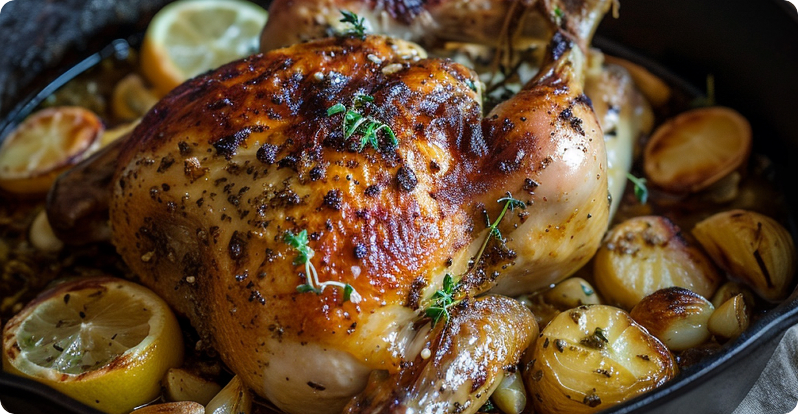
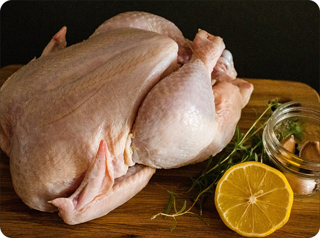
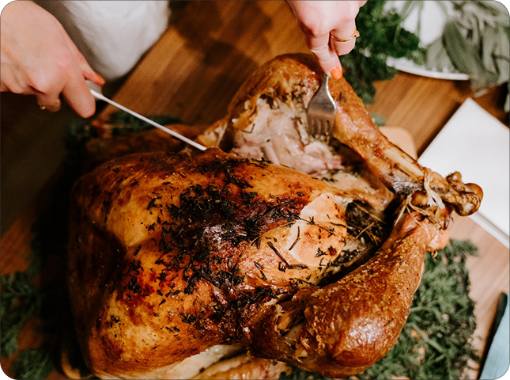
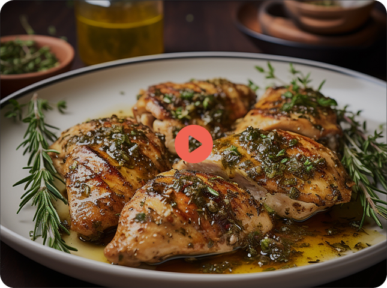

LEMON GARLIC ROASTED CHICKEN
Welcome to Cooks Delight, where culinary dreams come alive! Today, we embark on a journey of flavors with a dish that promises to elevate your dining experience – our Citrus Infusion Delight: Lemon Garlic Roasted Chicken.
- 1 HOUR
- HARD PREP
- 4 SERVES

Picture succulent chicken infused with the bright notes of lemon and the aromatic richness of garlic. It's a symphony of flavors that will have your taste buds dancing. Join us as we delve into the art of roasting and uncover the secrets behind creating a masterpiece that's not just a meal but a celebration of culinary craftsmanship.
As you preheat your oven, envision the kitchen filling with the tantalizing aroma of herbs and citrus, setting the stage for a delightful meal that transcends the ordinary. The anticipation builds as the chicken roasts to golden perfection, promising a dining experience that marries simplicity with sophistication. Whether you're a seasoned chef or a kitchen novice, this recipe invites you to become a culinary artist, creating a masterpiece that will leave a lasting impression on your guests and loved ones.
Let's go over the basics– the do's, and the don'ts– for How to Cook a chicken
DO'S:
- Thoroughly Clean Hands and Surfaces: Before and after handling raw chicken, ensure your hands, utensils, and surfaces are clean to prevent cross-contamination.
- Use Separate Cutting Boards: Dedicate specific cutting boards for raw chicken to avoid the spread of bacteria to other foods.
- Check Internal Temperature: Invest in a reliable meat thermometer to ensure the chicken reaches the safe internal temperature of 165°F (74°C).
DON'TS:
- Thaw Chicken at Room Temperature: Avoid thawing chicken on the counter. Instead, thaw it in the refrigerator to prevent bacterial growth.
- Overcrowd the Pan: When roasting, ensure the chicken pieces have space between them for even cooking. Overcrowding can lead to unevenly cooked chicken.
Instructions
This recipe goes beyond the basics, inviting you to savor the richness of a creamy tomato basil sauce that clings to each strand of perfectly cooked pasta. It's a celebration of simplicity, where every ingredient plays a crucial role in creating a dish that is as comforting as it is delightful.
Allow the chicken to rest for 10 minutes before carving. This brief resting period is essential; it allows the juices to redistribute, ensuring each slice is succulent and bursting with flavor. As you carve into the golden exterior, be prepared for the enticing aroma that fills the air, signaling that your Citrus Infusion Delight is ready to be savored.
Preheat and Prepare
- Preheat your oven to 375°F (190°C).
- Rinse the chicken inside and out, then pat it dry with paper towels.
Citrus Infusion
- Carefully lift the skin of the chicken and rub minced garlic directly onto the meat.
- Place lemon slices under the skin, ensuring they cover as much surface as possible.

Herb Blend
- In a small bowl, mix olive oil, dried thyme, dried rosemary, salt, and black pepper to create a herb-infused mixture.
- Brush the entire chicken with the herb-infused mixture, making sure it's evenly coated.
- Season the exterior with additional salt and black pepper to taste.

Roast to Perfection
- Place the chicken in a roasting pan, breast side up.
- Roast in the preheated oven for approximately 1 hour or until the internal temperature reaches 165°F (74°C).
- Allow the chicken to rest for 10 minutes before carving.
- Serve with the pan juices and roasted lemon slices for an extra burst of flavor.

Pairing Suggestions
- Side Dish: Serve alongside roasted vegetables or a simple green salad.
- Wine: Pair with a crisp white wine or a light rosé for a well-balanced meal.
Roasted Vegetables: The vibrant flavors of the roasted chicken complement beautifully with seasonal vegetables.
Herb-infused Quinoa: Create a wholesome meal by serving it alongside a bed of herb-infused quinoa.
The combination of fresh lemon and aromatic garlic creates a citrus-infused masterpiece that takes the classic roast chicken to a whole new level. The acidity of the lemons not only adds brightness but also helps to tenderize the meat, resulting in a juicy and flavorful dish. Whether you're hosting a family dinner or looking for a show-stopping centerpiece for a special celebration, this Lemon Garlic Roasted Chicken is the answer. The simplicity of the ingredients allows the natural flavors to shine, making it a versatile and impressive dish.
Reader Reviews
See what readers think about the current recipe and leave your own review.
3 comments
Ava Stone
March 18, 2026
Bright, juicy, and very easy to follow. The lemon and garlic balance each other really well.
Leave a Review
Your comment will be attached to the recipe you are currently viewing.